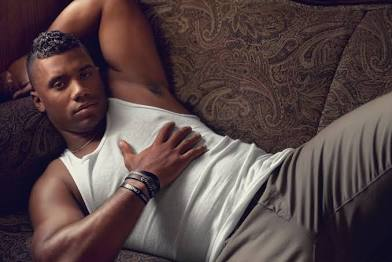

BED STUY BLUE COLLARS
A truly unique franchise, the Blue Collars are the only team to change ownership in league history. Originally founded by a great, great man in Dylan Boyd (#NeverForget) the Blue Collars franchise will #AlwaysRemember our original owner. However, make no mistake - the franchise needed new leadership. Championship caliber leadership.
So damn it, that is exactly what the franchise brought in. Initially, Mr. Routh refused to be a founding member of this league due to his outstanding duties as Commissioner and Owner across many leagues. BUT, his championship pedigree made him the obvious choice to step in and he couldn’t ignore the pleading and begging of the Blue Collar’s massive fanbase.
Despite not drafting the team and beginning his reign with an 0-6 record. Mr. Routh made massive moves, immediately putting the Blue Collars firmly on the map. It wasn’t long before the Blue Collars were celebrated as the inaugural champions of the illustrious Palm Sundays Fantasy Football League.
After the incredible, meteoric rise of the Blue Collars, you may be asking - what now? What now? What... now? To that the Blue Collars say: More. Fucking. Rings.
#GoToWork #Grind
#EverybodyGetMoreChineseNow
#NeverForget #AlwaysRemember
#GoBucs #GoKnicks #GoRays #GoLightning #GoGunners
MR. HORNSWOGGLE
With one ring already and falling in a close championship game last season, Mr. Hornswoggle is undeniably one of the powerhouses of the league. Other players quiver, QUIVER, in fear of swog. According to league owner Josh Siegel “I plan on changing nothing. I figured out this game immediately and I’m the fucking best at it” reports state that Hornswoggle will once again do no research prior to the dwaft date
NUEVA YORK LOS HUEVOS GRANDES
CAUSE I FEEL LIKE YOU REALLY BEING FUNNY ON THE SLY
NOW FACE DOWN, LAYIN' ON YOUR TUMMY OR YOU DIE
I TRIED BEING HUMBLE, HUMBLE GET NO RESPECT
NOW THE FIRST SIGN OF TROUBLE, THAT'S A HOLE UP IN YOUR NECK
PLUS WHAT I LOOK LIKE SPENDIN' MY NIGHTS IN JAIL?
I COULD NEVER BE A THUG, THEY DON'T DRESS THIS WELL
RIP MAYO VICK
#RIPCreamNewton
#RIPAlDenteCulpepper
KoRn HoLe Um
KoRn HoLe Um, inspired by legendary bands of the 90s Korn & Hole and the great American backyard game corn hole, is the storied and notorious team of Adam Matonic, who often finds themself saying, “Ummm…” before declining 85% of trades. KoRn HoLe Um is most known for drafting solely based on face card, midseason yips, and ghosting the group chat after being eliminated from the playoffs. But much like nu metal & Courtney Love, KoRn HoLe Um will always endure. <3
BK BAD BOIZ
The BK Bad Boiz, the ultimate underdogs. Lying in wait. Ready to pounce. To claim victory over the pathetic shambles of a once great Fantasea league.
For too long, The Bad Boiz’ biz has suffered at the hands of weak, erratic league leadership. The super hot, totally cool manager, Big E has proclaimed that this season will belong to the BBB’s. And light will shine once again on the worms of fantasy.
“Suck it nerds. We run this dumpfest now.” -Big E on start of seez
Glory to Big E’s BBBs

DANNY DIMES 69
The New York Giants are renowned for their physical prowess on the football field, and their impressive measurements off of it. With an average penis size that outshines every other team in the NFL, the Giants bring more than just athletic skill to the table. Their reputation for being exceptionally well-endowed is a well-kept secret among players and fans alike. From the rookies to the veterans, the Giants are a force to be reckoned with in every aspect. And if you think that's impressive, just ask anyone who's seen Russell Wilson’s large member.
← Back to Home